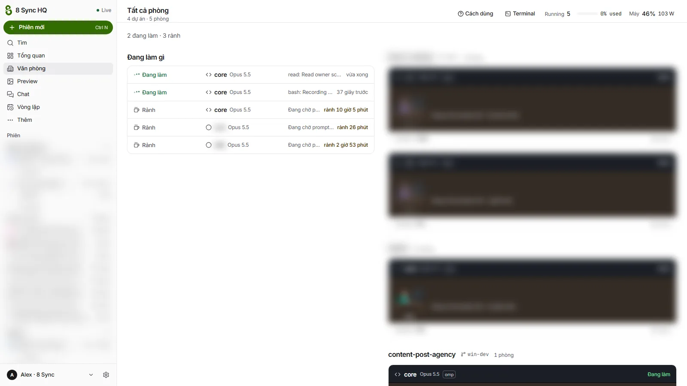
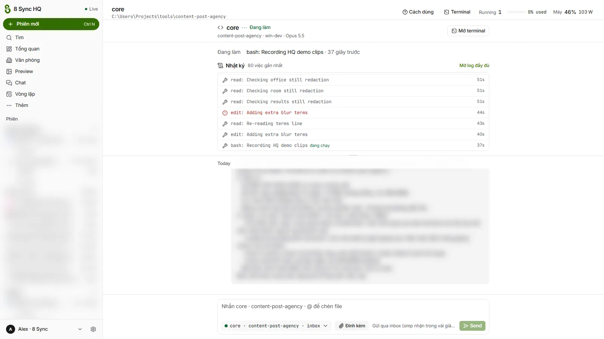
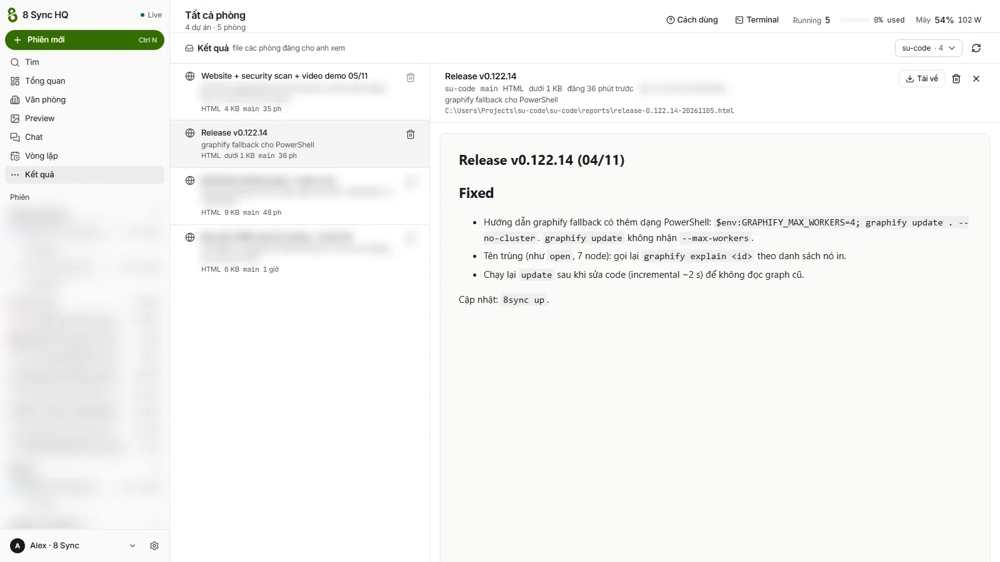

Your coding agents, one command, one HQ.
8sync . api opens a named session called api in this repo, or resumes it. omp by default, Claude Code with --mode claude-code-cli. 8 Sync HQ shows every session on the machine, at your desk or on your phone.
curl -fsSL https://get.8syncdev.com/install | sh
irm https://get.8syncdev.com/install.ps1 | iex
Then cd into a repo and run 8sync . api. No git, Rust or admin rights needed.
Same command. Pick the engine.
Every name is one conversation per repo, so 8sync . api tomorrow continues today's thread. --mode chooses the agent; SUSYNC_MODE changes your default.
omp and Claude Code are the two we run every day and test.
$ 8sync . api --mode claude-code-cli
Where this goes: every coding-agent CLI, each one visible and controllable from 8 Sync HQ.
8 Sync HQ: every session on one page
A local web dashboard for every omp and Claude Code session on the machine: who is working and who waits on you, each room's log and chat, the reports sessions post, a web terminal, and the machine's RAM, CPU and GPU. 8sync never opens a session or sends a prompt on its own.
Type / in a room's message box for what that session can run: omp's built-ins and commands, Claude Code's commands, and the skills in ~/.claude/skills such as /solo and /ship-loop.
8sync hq uiFrom any folder. The page opens on 127.0.0.1:8740.
8sync hq ui --publicAdds a one-time login link for your phone through a Cloudflare quick tunnel (needs cloudflared). Anyone with the link controls your sessions, so keep it to yourself.
8sync . api, the office, the / picker across omp and Claude Code, /solo from Router to release, and what one code lookup costs with graphify and trail.


Screenshots and video from a real HQ; other projects' private data is blurred. HQ copy is in Vietnamese today.
/solo works the backlog until you stop it
Type /solo once, in Claude Code or omp. A Router session picks items from your labelled issues, the Next list in su-code/STATE.md and unguarded failures in su-code/KNOWLEDGE.md. It never edits code: each item gets its own Worker, worktree and solo/<slug> branch.
The design follows DeepSeek's Super-Agent prototype (dsh-superagent-prototype, MIT): spend as little of your attention as possible, report in fixed states, ask one question at a time.
Six levels of hands-off work
Type one in a session, from your terminal or HQ's chat; levels 3 to 6 run in omp as well as Claude Code. You start levels 3 to 6, an agent can't, and the command you type is the permission to merge and release.
-
/do <task>A change of three files or fewer. No plan, no commit.
Needs you to look at the diff and commit.
-
/ship <task>Plan, research, code, test, review, CHANGELOG and memory, then a commit on a branch.
Needs you to push. It never pushes.
-
/ship-auto <task>/ship, then a PR, CI green on Windows, macOS and Linux, merge, tag and release.Needs you only for an irreversible, production or billing choice.
-
/ship-loop <goal>Writes acceptance checks, repeats until every check exits 0, then merges and releases.
Needs you when a cap is hit: 12 rounds, 90 minutes, or stuck.
-
/autopilotUp to 5 backlog items or 8 hours, each item its own loop on its own branch.
Needs you to read the brief it leaves in
STATE.md. -
/soloA Router and one Worker per item, item after item, 12 hours by default.
Needs you at a hard rail, or to say
dừng.
One item, start to finish
Pick
Items you wrote (an issue, a Next line) run at once. Inferred ones (a bot's issue, a failure line) are only logged as
would accept:until you send/solo --accept auto.Map the blast radius
The Worker runs
graphify explainandgraphify pathbefore any edit and writesImpact:into the item'sPLAN.md. Two Workers run side by side only when their impact doesn't overlap.Loop to green
Acceptance checks that run as commands, with evidence for each. Stuck on the same failure twice, it researches first, in the code and on the web for larger choices, and keeps the findings in
research.md.Gate
UAT on the real surface first: the built binary runs the changed path, or a real browser opens the page and saves screenshots. No evidence, no merge. Then review,
8sync ccc risk,/sec, and CI green on Windows, macOS and Linux.Merge and release
A diff of 200 lines or fewer (
--merge-lines) is squash-merged and released, installed with8sync upand tested again on the installed version, and the worktree removed. A bigger one waits for your answer.--no-releasestops at merge; production deploy is never granted.Learn, then the next item
A retro line goes to
su-code/KNOWLEDGE.mdbefore the Router picks again.
When it needs you
- One question, never blocking
- Written to
su-code/ship/solo/SOLO.mdwith 2 to 4 options, the first recommended. Workers go on with items that don't depend on it. - Pinned in HQ
- HQ shows the question with one button per option. From any chat,
solo: <option>answers it. - A strict Critic after 15 minutes
- If you're away past
--answer-after, a Critic picks for your original goal. Destructive steps, red CI, secrets, production data and billing still wait for you.solo: override <option>corrects it and records the lesson insu-code/PREFERENCES.md. - Safe to restart
- After a reboot it checks the worktree, git, the PR and CI before repeating any push, merge or release.
- On omp
- No cron:
/soloruns as anengine_planloop that continues up to 8 times in a row; typing/soloagain picks up fromSOLO.md.
Defaults: --hours 12, --max-tokens 2000000 per day (an estimate), --workers 2, --accept observe. dừng or /solo stop finishes the step in flight, then stops with a daily summary.
Claude Code mode comes with rails
With --mode claude-code-cli, Anthropic's Claude Code runs with the 8sync kit from ~/.claude. Its hooks run before and after every tool call, in auto mode and under claude -p, and ship inside the 8sync binary.
-
Guard
Denies deleting the root, your home or the project, disk wipes, force-push in any spelling, and printing or uploading
.envand keys. Asks before deletes outside the project. -
Verify
After every edit,
cargo check,typecheckorgo vetruns in the background. Only a failure comes back, and a turn can't end on a broken build. -
Stop gate
Claude can't end a turn on a plan it hasn't carried out ("Next I'll…") or on a routine "shall I proceed?". Your "stop" or "dừng" always ends it.
-
Ask gate
Before a question reaches you, a model checks it. Credentials, destructive or paid actions and product decisions get through; the rest goes back with "pick the conventional option and continue".
-
Ship grant
Merge, tag and release need your grant: a Ship answer, or the loop you typed yourself (
/ship-auto,/ship-loop,/autopilot,/solo). It covers that session and repo for 24 hours or the loop's--hours, never a production deploy, anddừngrevokes it. -
No bypass
A launcher's
--dangerously-skip-permissionsis rejected. The session opens in auto mode, with every lamp on this panel still lit.
The guard is a seat belt, not a sandbox: a program that deletes files itself (python -c, a build script) is not inspected. Claude Code signs in with Anthropic's own login; 8sync never proxies a consumer subscription. omp and Forge use your own API key.
Code search reads a map before a file
Every session starts at STEP 0: questions about code go to a local code map, with no model call, before any file is opened. graphify answers who calls X, what X calls, the impact of a change and the path from A to B. trail answers where X is and what a file looks like.
| Question | Command | Time | Answer size |
|---|---|---|---|
| Who calls X, what X calls, impact | graphify explain <symbol> | 1.4 s | ~170 tokens |
| The same, where graphify is missing | trail callers <symbol> | 7.5 s | ~92 tokens |
| Where is X, text with its symbol | trail grep <pattern> | 0.8 s | ~161 tokens |
| Reading the file instead | a 2,000-line file | ~23,000 tokens |
graphify: callers, impact, path
graphify update . --no-cluster builds the graph: 20.6 s the first time on 15,406 nodes, about 2 s after each edit. Then graphify explain <symbol> or graphify path "A()" "B()". /solo Workers run it before every change.
trail: where, and the outline
trail ask "<question>", trail grep <pattern>, trail skeleton <file>. A raw file is read only right before it is edited. The installer sets up both; graphify needs uv.
-
Run the installer
Linux, macOS your systemcurl -fsSL https://get.8syncdev.com/install | shWindows PowerShell your systemirm https://get.8syncdev.com/install.ps1 | iex -
Open a named session
cd your-repo && 8sync . apiAdd
--mode claude-code-clifor Claude Code; sign in with your Claude plan the first time. -
Watch it from HQ
8sync hq ui -
Stay current
8sync upinstalls a new release with a sha256 check.8sync doctorchecks the whole setup.
What the installer sets up
- The
8syncbinary - One file, sha256-checked against the release, put on your PATH.
- omp and Claude Code
- From their official installers, Claude Code with the 8sync kit in
~/.claude. - Forge with zsh
- From Forge's GitHub release; on Windows, a private zsh next to Git for Windows.
- gh, trail, graphify, skills, MCP
- GitHub CLI, the trail code map, graphify when
uvis present, bundled skills, MCP servers and global agent rules.
Every step is idempotent, and a step that fails is reported while the rest still installs. CI runs these one-liners on Ubuntu (x64, arm64), macOS (Apple silicon, Intel) and Windows after every release and every week.